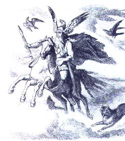
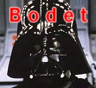

Forums galactiques > Taverne galactique : lieu de discussion informel > Quiz General
Pages : 1 2 ... 18 19 20 ... 43 44
| Necrid  20/06 ETU 22:21 | disons pour faire simple que les Chinois avaient lancé une contre-offensive face à la poussée musulmane mais que celle-ci s'est soldée par un véritable désastre, près de la rivière Talas. L'expansion des Tang était arrêtée mais curieusement les troupes musulmanes ne tirèrent pas profit de leur victoire éclatante... La bataille aboutit donc à un statu quo... |
Boba20/06 ETU 23:14 | Hop hop une petite enigme pas dansgereuse : Cette chose toutes choses dévore : Oiseaux, bêtes, arbres, fleurs ; Elle ronge le fer, mord l'acier ; Réduit les dures pierres en poudre ; Met à mort les rois, détruit les villes Et rabat les hautes montagnes. Prenez votre temps pour réflechir, et si vous ne trouvez pas, demandez à Gollum, lui sait. |
Necrid20/06 ETU 23:15 | le Temps |
mad-dog21/06 ETU 01:45 | le feu |
etic21/06 ETU 01:46 | l'air |
CLEMENT21/06 ETU 07:07 | la foudre |
Boba21/06 ETU 08:18 | Bingo Necrid. 1 min après mon message c'est fort... lâche ta touche F5 elle va mourir ! :) -"Le temps, le temps !" |
Boba21/06 ETU 08:24 | Ca en mérite une autre : On ne peut la voir, on ne peut la sentir, on ne peut l'entendre, on ne peut la respirer. Elle s'étend derrière les étoiles et sous les collines, elle remplit les trous vides. Elle vient d'abord et suit après. Elle termine la vie et tue le rire. Gollum a, une fois de plus la réponse à celle-ci. Bonne chance ! |
Andrépierre21/06 ETU 08:49 | L'aire? |
Andrépierre21/06 ETU 08:56 | La mort ! |
| Seigneur_Bodet  21/06 ETU 09:09 | la mort oue je dirais |
Andrépierre21/06 ETU 09:13 | Ca paraît le plus logique |
Andrépierre21/06 ETU 09:14 | J'en est une pour vous seigneur bodet |
Andrépierre21/06 ETU 09:15 | Combien il y a eut de mort pendant le massacre d'arménien en Turci ? ? ? ( entre 1915 et 19.. je ne sais plus enfin vous voyez de quoi je veux parler) |
Seigneur_Bodet21/06 ETU 09:27 | 200 000 ? 50 000 ? |
Andrépierre21/06 ETU 09:28 | + |
Andrépierre21/06 ETU 09:29 | si tu trouve pas je te diré la reponse ds 10mn |
Seigneur_Bodet21/06 ETU 09:45 | ben je vois pas ... 1 000 000 ? |
Andrépierre21/06 ETU 09:53 | 600 000 |
Andrépierre21/06 ETU 09:55 | Où a été signé l'armisticipe le 11 novembre 1918 ? ? ? |
Pages : 1 2 ... 18 19 20 ... 43 44
Forums galactiques > Taverne galactique : lieu de discussion informel > Quiz General